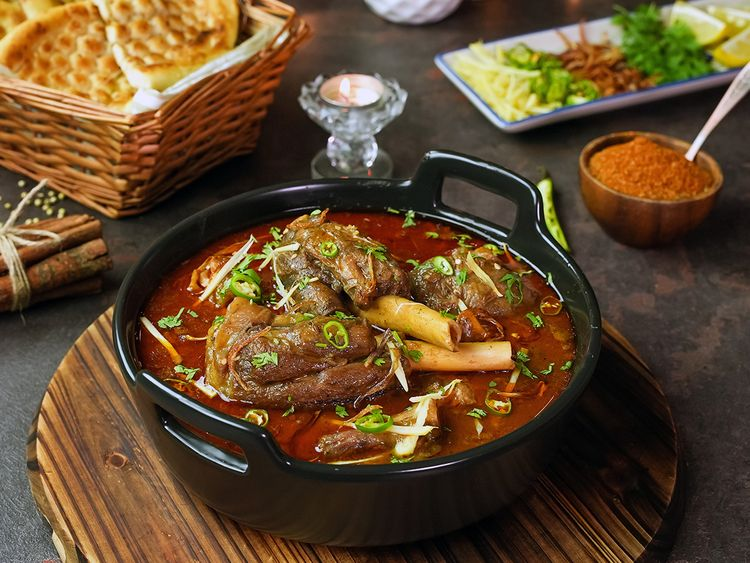

Pakistani food is very famous. It has a little bit of spice in it and it feel so goodPakistani cuisine (Urdu: پاکستانی پکوان, romanized: pākistānī pakwān) can be characterized by a blend of various regional cooking traditions from South, Central and Western Asia, as well as elements from its Mughal legacy.[2][3] The country's various cuisines are derived from its ethnic and cultural diversity. Pakistani cuisine is based on halal principles, which forbid pork and alcohol consumption in accordance with Sharia, the religious laws of Islam. International cuisine and fast food are popular in major cities such as Islamabad and Karachi; blending local and foreign recipes (fusion food), such as Pakistani Chinese cuisine, is also common in large urban centres. As a result of lifestyle changes, ingredients such as masala (mixed and ready-to-use spices) and ghee (clarified butter) are becoming increasingly popular.
